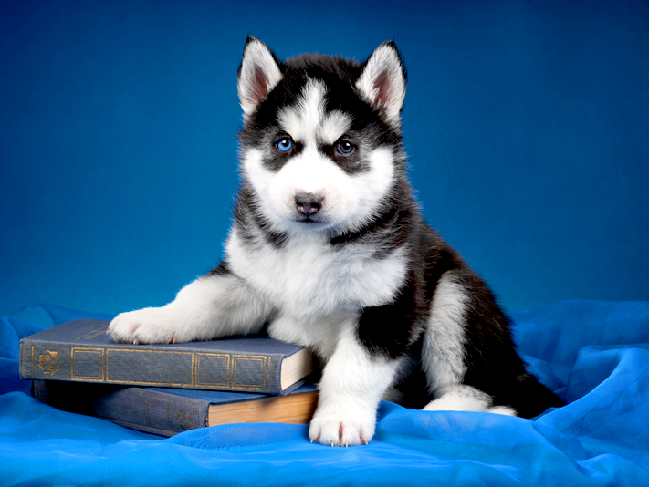
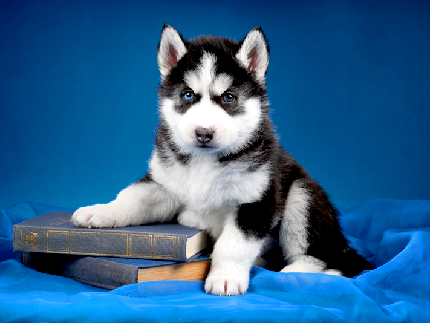

커피의 기원


 

information
독특한 풍미를 가진 갈색에 가까운 기호 음료이다. 커피나무 열매(Cherry)속의 씨앗(생두, Green Bean)을 볶고(원두, Coffee Bean), 물을 이용하여 그 성분을 추출하여 만든다. 어원은 아랍어인 카파(Caffa)로서 힘을 뜻하며, 에티오피아의 산악지대에서 기원한 것으로 알려져 있다.
1896년 아관파천으로 고종황제가 러시아 공관에 머물 당시, 초대 러시아 공사였던 웨베르의 처형인 손탁으로부터 커피를 접한 고종은 이후 커피 애호가가 되었다고 전해진다. 이후 1902년에 손탁 호텔(Sontag Hotel)안에 정동구락부라는 우리나라 최초의 다방이 생겼으며, 한국전쟁을 계기로 미군을 통해 인스턴트 커피가 일반인들에게 유통되기 시작하였다.
역사
최근에는 인공첨가물이 들어 있지 않은 원두커피의 소비가 증가하고 있다.